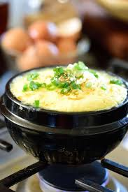

Korean Steam Egg
Home

Description
Korean steam egg is a soft, fluffy, and savory egg dish commonly served as a side dish (banchan) in Korean cuisine.
It is made by whisking eggs with water or broth and seasoning with salt, fish sauce, or soy sauce, then steaming the mixture until it becomes light and custard-like.
Ingrdients
- 3 eggs
- 1 cup anchovy stock (chicken, vegetable, seafood, dashi stock all work)
- ⅔ tsp salt (do not add if your stock is already salted)
- ¾ tsp fish sauce
- 1 ½ tsp mirin
- Green onion
- Sesame oil
Directions
- Mix 3 eggs, salt, fish sauce, and mirin.
- Heat up 1 cup of stock in a stone pot or small pot.
- Add in eggs when stock starts slightly boiling, and whisk together for 1 minute.
- Cover the top and steam for 5 minutes.
- Place green onion and sesame oil on top.